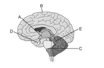

Q.1 Most of the neurons in the human central nervous system*
Q.2 For a neuron with an initial membrane potential at -70
mV, an increase in the movement of potassium ions out of
that neuron's cytoplasm would result in the ________*
Q.3 The "undershoot" phase of hyperpolarization is due to ________*
Q.4 Which neurotransmitter is considered the brain's most common inhibitory neurotransmitter?*
Q.5 which category of neuron would be most involved in learning and tuning signals in a neural circuit?*
Q.6 Which of the following would y result in seizures? *
Q.7 which of the following best describes that Drugs of abuse act as imposters?*
Q.8 Protoplasmic astrocytes are present in ________*
Q.9 How many lobes of the brain 4 lobes are parts of the semantic system?*
Q.10 Which receptors the endorphins can stimulate?*
Q.11 If the eye has poor visual acuity it is called:*
Q.12 The release of neurotransmitter at a chemical
synapse in the central nervous system is dependent upon
which of the following?*
Q.13 Which substance enhances the sensitivity of pain
receptors but does not directly excite them?*
Q.14 Which structure carries axons from neurons in the
ventral posterolateral nucleus of the thalamus to the
primary somatosensory cortex?*
Q.15 Which statement concerning synaptic transmission is
correct?*
Q.16 Light entering the eye passes through which retinal
layer first?*
Q.17 All of the following may cause amensia except:*
Q.18 The precentral gyrus and corticospinal tract are
essential for which of the following?*
Q.19 The following steps refer to various stages in
transmission at a chemical synapse:
1. Neurotransmitter binds with receptors associated with the
postsynaptic membrane 2. Calcium ions rush into neuron's cytoplasm 3. An action potential depolarizes the membrane of the
presynaptic axon terminal 4. The ligand-gated ion channels open 5. The synaptic vesicles release neurotransmitter into the
synaptic cleft
*
Q.20 Use the figure to answer the following
question.
Which of the following region(s) arose
developmentally from the hindbrain?*

Q.21 Wakefulness is regulated by the reticular formation,
which is present in the ________*
Q.22 After suffering a stroke, a patient can see objects
anywhere in front of him, but pays attention only to objects
in his right field of vision. When asked to describe these
objects, he has difficulty judging their size and distance.
What part of the brain was likely damaged by the stroke?*
Q.23 One of the fundamental processes by which memories
are stored and learning takes place ________*
Q.24 Sensory transduction of light in the vertebrate retina
is accomplished by ________*
Q.25 Two students studying physiology taste a known
"bitter" substance, and both reports sensing bitterness. They
then sample another substance. Student A reports sensing
both a bitter taste and a salty taste, but student B reports only
a salty taste. What is the most logical explanation?*
Q.26 A 72-year-old man visits his physician because he
finds it difficult to hold his hand steady when painting.
Examination reveals a resting tremor and rigidity. The
symptoms are relieved by a single dose of levodopa. This
patient’s neurological signs are most likely related to a
lesion within which of the following?*
Q.27 Which of the following characteristics of an axon is
most dependent on its diameter?*
Q.28 A 22-year-old man sees his ophthalmologist because
it is becoming increasingly difficult for him to read the
newspaper. His vision problem most likely results from an
inability to contract which of the following?*
Q.29 he precentral gyrus and corticospinal tract are
essential for which of the following?*
Q.30 A 25-year-old student studies for a test in medical
physiology. The visual contrast of the subject matter is
enhanced due to lateral inhibition of the visual input by
which cell type in the retina?*